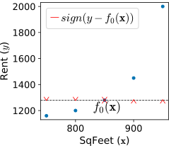
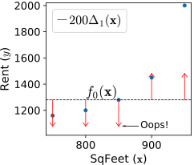
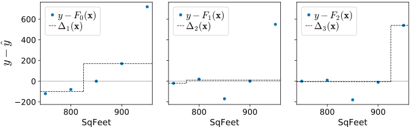
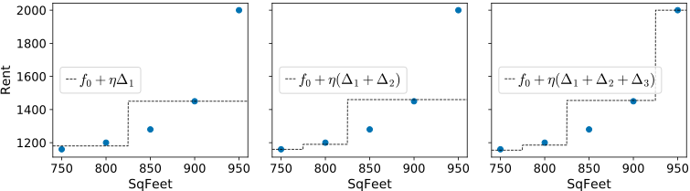

Gradient boosting: Heading in the right direction
Terence Parr and Jeremy Howard
Please send comments, suggestions, or fixes to Terence.
In our previous article, Gradient boosting: Distance to target, our weak models trained regression tree stumps on the residual vector,  , which includes the magnitude not just the direction of
, which includes the magnitude not just the direction of  from our the previous composite model's prediction,
from our the previous composite model's prediction,  . Unfortunately, training the weak models on a direction vector that includes the residual magnitude makes the composite model chase outliers. This occurs because mean computations are easily skewed by outliers and our regression tree stumps yield predictions using the mean of the target values in a leaf. For noisy target variables, it makes more sense to focus on the direction of from rather than the magnitude and direction.
. Unfortunately, training the weak models on a direction vector that includes the residual magnitude makes the composite model chase outliers. This occurs because mean computations are easily skewed by outliers and our regression tree stumps yield predictions using the mean of the target values in a leaf. For noisy target variables, it makes more sense to focus on the direction of from rather than the magnitude and direction.
Chasing the sign vector
This brings us to the second commonly-used direction vector with gradient boosting, which we can call the sign vector: . The sign vector elements are either -1, 0, or +1, one value for each observation's target value. No matter how distant the true target is from our current prediction, we'll train weak models using just the direction info without the magnitude. It gets weirder, though. While we train the weak models on the sign vector, the weak models are modified to predict a residual not a sign vector! (A stump leaf predicts the median of all the residuals within that leaf, to be precise.) More on this later.
If there are outliers in the target variable that we cannot remove, training weak models on just the direction is better than both direction and magnitude. We'll show in Gradient boosting performs gradient descent that using as our direction vector leads to a solution that optimizes the model according to the mean absolute value (MAE) or  loss function: for N observations.
loss function: for N observations.
Optimizing the MAE means we should start with the median, not the mean, as our initial model,  , since the median of y minimizes the loss. (The median is the best single-value approximation of loss.) Other than that, we use the same recurrence relations to compute composite models based upon the sign of the residual vector:
, since the median of y minimizes the loss. (The median is the best single-value approximation of loss.) Other than that, we use the same recurrence relations to compute composite models based upon the sign of the residual vector:
Let's assume  so that it drops out of the equation to simplify our discussion, but keep in mind that it's an important hyper-parameter you need to set in practice. Also, recall that
so that it drops out of the equation to simplify our discussion, but keep in mind that it's an important hyper-parameter you need to set in practice. Also, recall that  yields a predicted value, yi, but
yields a predicted value, yi, but  yields a predicted target vector, , one value for each
yields a predicted target vector, , one value for each  feature row-vector in matrix X.
feature row-vector in matrix X.
Here is the rental data again along with the initial  model (median of rent vector ), the first residual, and the first sign vector:
model (median of rent vector ), the first residual, and the first sign vector:
Visually, we can see that the first sign vector has components pointing in the right direction of the true target elements, yi, from  :
:

As mentioned above, this version of a GBM is tricky so let's look in detail at how regression tree stumps make predictions in this case.
Two perspectives on training weak models for L1 loss
Our goal is to create a series of nudges,  , that gradually shift our initial approximation, , towards the true target rent vector, . The first stump,
, that gradually shift our initial approximation, , towards the true target rent vector, . The first stump,  , should be trained on
, should be trained on  , as opposed to the residual vector itself, and let's choose a split point of 850 because that groups the sign values into two similar (low variance) groups, and . Because we are dealing with absolute difference and not
, as opposed to the residual vector itself, and let's choose a split point of 850 because that groups the sign values into two similar (low variance) groups, and . Because we are dealing with absolute difference and not  squared difference, stumps should predict the median, not the mean, of the observations in each leaf. That means would predict -1 for
squared difference, stumps should predict the median, not the mean, of the observations in each leaf. That means would predict -1 for  <825 and 1 for >=825:
<825 and 1 for >=825:

Without the distance to the target as part of our nudges, however, the composite model would step towards rent target vector very slowly, one dollar at a time per observation. We need to weight the predictions so that the algorithm takes bigger steps. Unfortunately, we can't use a single weight per stage, like , because it might force the composite model predictions to oscillate around but never reach an accurate prediction. A global weight per stage is just too coarse to allow tight convergence to for all simultaneously. For example, if we set to get the fourth and fifth data point predictions from median 1280 to 1480 (closer to their 1450, 2000 target values) in one step, would also push the other points very far below their true targets:

When training weak models on the residual vector, in the previous article, each regression tree leaf predicted the average residual value for the observations in that leaf. Such a prediction is the same mathematically as predicting a sign, -1 or 1, then weighting it by the (absolute value of the) average residual. (In our general algorithm section, we prove the optimal weight is the average residual.) That gives us a hint that we could use a weight per leaf to scale the predictions derived from the sign vector, but how do we compute those weights?
We know exactly how we should push each because we have the residuals, . The problem is that GBMs never add residual vectors directly to move the overall prediction,  . GBMs adjust each using the prediction of a weak model,
. GBMs adjust each using the prediction of a weak model,  , which means that we must choose a single value to represent the predictions for a whole group of residuals (all residuals within a leaf). The best single value to represent the group of residuals is either the mean or the median, depending on whether we are optimizing MSE or MAE, respectively. The idea is to pick a weight that jumps the next prediction, , into the “middle” the current residuals for the associated leaf.
, which means that we must choose a single value to represent the predictions for a whole group of residuals (all residuals within a leaf). The best single value to represent the group of residuals is either the mean or the median, depending on whether we are optimizing MSE or MAE, respectively. The idea is to pick a weight that jumps the next prediction, , into the “middle” the current residuals for the associated leaf.
Instead of scaling each leaf's direction prediction by a weight, we can think of this process as having each stump leaf predict the median residual of the observations in that leaf, rather than predicting the direction and scaling by the median. Without alteration, the leaves of a standard regression tree stump would predict the average sign of the residual, not the median residual. This fact makes the MSE and MAE approaches seem nearly identical. That's a bit weird and an incredibly subtle point, which we'll explore below in more detail. For now, let's finish the GBM construction.
GBM optimizing MAE by example
A GBM that optimizes MAE uses weak models that predict median residual values. Here are the intermediate results of residuals and weak learners for the  case (with learning rate ):
case (with learning rate ):
The split points are 825, 775, 925 for the models and here are the resulting stumps:

Let's look at the residuals and the prediction of the models trained on the sign vectors but predicting the median of the residuals in the leaf nodes.
| for MAE optimization |
|

|
The blue dots are the residual vector elements whose sign value is used to train weak models, the dashed lines are the predictions made by , and the dotted line is the origin at 0. The residual vector elements get closer to zero in general as they did in the previous article (trained on the residual not sign vector). In this case, however, the weak models are clearly not chasing the outlier, which is finally dealt with using  . In contrast, the -optimizing model from the previous article used to immediately bring that outlier residual to 0.
. In contrast, the -optimizing model from the previous article used to immediately bring that outlier residual to 0.
Despite the imprecision of the weak models, the weighted predictions nudge closer and closer to the true . Here is a sequence of diagrams showing the composite model predictions as we add weak models:

So now we've looked at two similar GBM construction approaches, one that trains weak models on residual vectors and the other that trains weak models on sign vectors. The former predicts the average residual value for observations in the leaf associated with an unknown whereas the latter predicts the median residual value. The effect of these differences is that the former optimizes the mean squared error and the latter optimizes the mean absolute error over the training set. Why this is true mathematically is the focus of the next article and final article, Gradient boosting performs gradient descent. You can jump straight there if you like, but we also provide an empirical look at the difference between the two GBMs in the next section.
Comparing GBM trees that optimize MSE and MAE
GBMs that optimize MSE ( loss) and MAE ( loss) both train regression trees, , on direction vectors. The first difference between them is that MSE-optimizing GBMs train trees on residual vectors and MAE GBMs train trees on sign vectors. The goal of training regression tree models is to group similar direction vectors into leaf nodes in both cases. Because they are training on different vectors (residuals versus signs), the trees will group the observations in the training data differently. The training of the weak model trees (and not the overall GBM) always computes split points by trying to minimize the squared difference of residual or sign values into two groups, even in the MAE case.
The second difference between the GBMs is that tree leaves of MSE GBMs predict the average of the residuals, , values for all i observations in that leaf, whereas MAE GBM tree leaves predict the median of the residual. Weak models for both GBMs predict residuals given a feature vector for an observation.
Just to drive this home, MSE GBMs train on residual vectors and the leaves predict the average residual. MAE GBMs train on sign vectors, but the leaves predict residuals like MSE GBMs, albeit the median, not the average residual. This mechanism is strange because models don't typically train on one space (sign values) and predict values in a different space (residuals). It's perhaps easier to think of MAE GBMs as training on and predicting sign vectors (in -1, 0, +1) but then weighting predictions by the absolute value of the median of the residuals. This approach would mean we don't have to alter the leaf predictions after constructing the regression trees. (The algorithm presented later does alter the trees.) Friedman shows that, for regression tree weak models, the optimal weight, w, associated with any leaf, l, is computed by finding w that minimizes:
For the MSE case, that means minimizing:
and for the MAE case, that means minimizing:
The weights that minimize those equations are the mean and the median, respectively. (We prove this for the MSE case in General algorithm with regression tree weak models.)
To get a feel for the difference between MSE and MAE GBMs, let's revisit the intermediate model predictions for the weak learners trained on both residual vectors and those trained on sign vectors. We can empirically verify that training weak models on the residual vector drops the MSE loss dramatically faster than training on the sign vector. Here is the data (stripped a decimals) pulled from the first article with the MSE and MAE tacked on:
and here is the data pulled from this article with the MSE and MAE tacked on:
There are a number of interesting things going on here. First, recall that we used the average for the model in the first article and the median in this article because the average minimizes the MSE and the median minimizes the MAE. The data confirms this: The MSE from the MSE GBM is smaller than for the MAE GBM and that the MAE is higher in the MSE GBM data than the MAE GBM. Our choice of in each case was, therefore, a good one.
Next, look at the trajectory of the MSE for both kinds of models. For trained on residual vectors, the MSE immediately drops by 10x because the regression tree stump for immediately takes off after the outlier at =950. The residual computed from the average line to $2000 rent is so large that the regression tree stump splits the outlier into its own group. The difference between training on the residual vector versus sign vector is clear when we compare the predictions of both composite models:
| trained on residual vector | trained on sign vector |

|

|
(The region highlighted in orange is the group of observations associated with the right child of the stump and the arrow points at the prediction for the right child.)
The trained on the sign vector splits the observations in between the second and third because the sign vector is . The regression tree chooses to group together because they are identical values, leaving  as the other group. Instead of the magnitude, the trained on sign vectors treat anything above or equal to the median, , as the same value.
as the other group. Instead of the magnitude, the trained on sign vectors treat anything above or equal to the median, , as the same value.
The MSE for weak models trained on the sign vector does not drop dramatically until finally goes after the outlier to yield . In fact, the MSE does not budge in between the second and third weak models. Empirically at least, training on sign vectors does not seem to be optimizing the MSE very well whereas training on residual vectors does optimize MSE well.
Finally, let's make some observations about the intermediate model predictions. The units of each element within a vector is rent-dollars, so each is a vector of dollar values in N-space (here, ). That means that the Fm predictions are vectors sweeping through N-space as we increase m. When papers use the term “function space,” they just mean the N-space of predictions: a vector of N target values predicted by some .
GBM algorithm to minimize L1 loss
For completeness, here is the boosting algorithm, derived from Friedman's LAD_TreeBoost on page 7, that optimizes the loss function using regression tree stumps:
Note that it is not a typo that we train regression trees using the standard mechanism that minimizes the squared error when choosing splits. The regression tree is trained on sign vectors, which is the key goal. We could probably alter the regression tree training to use absolute error, but this usually takes longer (at least in scikit's implementation) than training using squared error.
Another detail to keep in mind is that while we train the regression tree on the sign vector, the algorithm alters the tree so that the leaves predict the median of the residuals,  . The sign vector is used for grouping/splitting purposes in the tree, but the actual prediction is in fact a residual, just like it is for the algorithm.
. The sign vector is used for grouping/splitting purposes in the tree, but the actual prediction is in fact a residual, just like it is for the algorithm.
![{\small
\setlength{\tabcolsep}{0.5em}
\begin{tabular}[t]{rrrrrrrrrrr}
&&& $sign$ &&&& $sign$\vspace{-1mm}\\
$\Delta_1$ & $F_1$ & $\vec y$-$F_1$ & $\vec y$-$F_1$ & $\Delta_2$ & $F_2$ & $\vec y$-$F_2$ & $\vec y$-$F_2$ & $\Delta_3$ & $F_3$\\
\hline
-100 & 1180 & -20 & -1 & -20 & 1160 & 0 & 0 & -5 & 1155\\
-100 & 1180 & 20 & 1 & 10 & 1190 & 10 & 1 & -5 & 1185\\
170 & 1450 & -170 & -1 & 10 & 1460 & -180 & -1 & -5 & 1455\\
170 & 1450 & 0 & 0 & 10 & 1460 & -10 & -1 & -5 & 1455\\
170 & 1450 & 550 & 1 & 10 & 1460 & 540 & 1 & 540 & 2000\\
\end{tabular}
}](images/latex-89EEE54C7CD81D86A27EEEC752599DDD.svg)
![{\small
\setlength{\tabcolsep}{0.5em}
\begin{tabular}[t]{rrrrrrr}
\multicolumn{7}{c}{$\Delta_m$ {\bf trained on residual vector} $\vec y - \hat{\vec y}$}\\
&$\vec x~~~$ & $\vec y~~~$ & \multicolumn{4}{c}{...$~\hat{\vec y}$~...}\vspace{-1mm}\\
&{\bf SqFeet} & {\bf Rent} & $F_0(\vec x)$ & $F_1(\vec x)$ & $F_2(\vec x)$ & $F_3(\vec x)$\\
\hline
& 750 & 1160 & 1418 & 1272 & 1180 & 1195 \\
& 800 & 1200 & 1418 & 1272 & 1180 & 1195 \\
& 850 & 1280 & 1418 & 1272 & 1334 & 1349 \\
& 900 & 1450 & 1418 & 1272 & 1334 & 1349 \\
& 950 & 2000 & 1418 & 2000 & 2061 & 2000 \\
\hline
\vspace{-4mm}\\
{\bf MSE}&\multicolumn{2}{l}{$\frac{1}{N}\sum_i^N(y_i-F_m(\vec x_i))^2$} & 94576 & 9895 & 4190 & 3240\\
{\bf MAE}&\multicolumn{2}{l}{$\frac{1}{N}\sum_i^N|y_i-F_m(\vec x_i)|$} & 246 & 74 & 54 & 42
\end{tabular}
}](images/latex-FE7C203506919B28959D6A9F92AA2F1A.svg)
![{\small
\setlength{\tabcolsep}{0.5em}
\begin{tabular}[t]{rrrrrrr}
\multicolumn{7}{c}{$\Delta_m$ {\bf trained on sign vector} $sign(\vec y - \hat{\vec y})$}\\
&$\vec x~~~$ & $\vec y~~~$ & \multicolumn{4}{c}{...$~\hat{\vec y}$~...}\vspace{-1mm}\\
& {\small\bf SqFeet} & {\bf Rent} & $F_0(\vec x)$ & $F_1(\vec x)$ & $F_2(\vec x)$ & $F_3(\vec x)$\\
\hline
& 750 & 1160 & 1280 & 1180 & 1160 & 1155 \\
& 800 & 1200 & 1280 & 1180 & 1190 & 1185 \\
& 850 & 1280 & 1280 & 1450 & 1460 & 1455 \\
& 900 & 1450 & 1280 & 1450 & 1460 & 1455 \\
& 950 & 2000 & 1280 & 1450 & 1460 & 2000 \\
\hline
\vspace{-4mm}\\
{\bf MSE}&\multicolumn{2}{l}{$\frac{1}{N}\sum_i^N(y_i-F_m(\vec x_i))^2$} & 113620 & 66440 & 64840 & 6180\\
{\bf MAE}&\multicolumn{2}{l}{$\frac{1}{N}\sum_i^N|y_i-F_m(\vec x_i)|$} & 218 & 152 & 148 & 40 \\
\end{tabular}
}](images/latex-58407F5BFCD7DC8E319C21138920E3FA.svg)
![\setlength{\algomargin}{3pt}
\SetAlCapSkip{-10pt}
\begin{algorithm}[H]
\LinesNumbered
\SetAlgorithmName{Algorithm}{List of Algorithms}
\SetAlgoSkip{}
\SetInd{.5em}{.5em}
\TitleOfAlgo{{\em l1boost}($X$,$\vec y$,$M$,$\eta$) {\bf returns} model $F_M$}
Let $F_0(X) = median(\vec y)$\\
\For{$m$ = 1 \KwTo $M$}{
Let $\vec r_{m-1} = \vec y - F_{m-1}(X)$ be the direction vector\\
Let ${\bf sign}_{m-1} = sign(\vec r_{m-1})$ be the sign vector\\
Train regression tree $\Delta_m$ on ${\bf sign}_{m-1}$, minimizing \underline{squared error}\\
\ForEach{leaf $l \in \Delta_m$}{
Alter $l$ to predict median (not mean) of $y_i - F_{m-1}(x_i)$ for obs. $i$ in $l$\\
}
$F_m(X) = F_{m-1}(X) + \eta \Delta_m(X)$\\
}
\Return{$F_M$}\\
\end{algorithm}](images/latex-99749CB3C601B0DD9BEE5A9E91049D4B.svg)